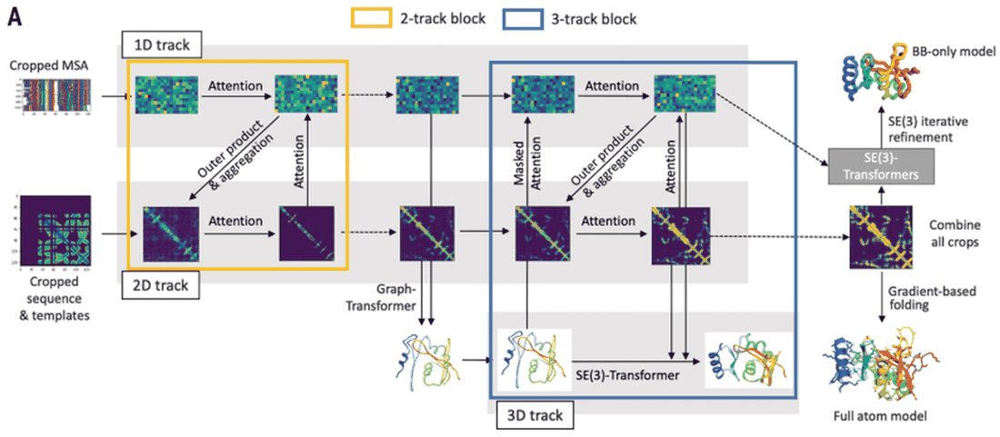
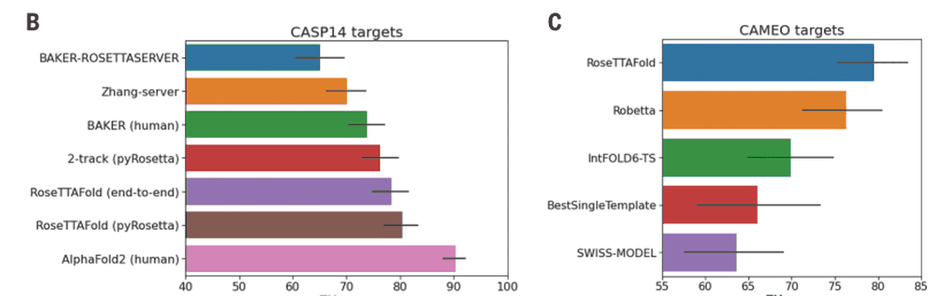
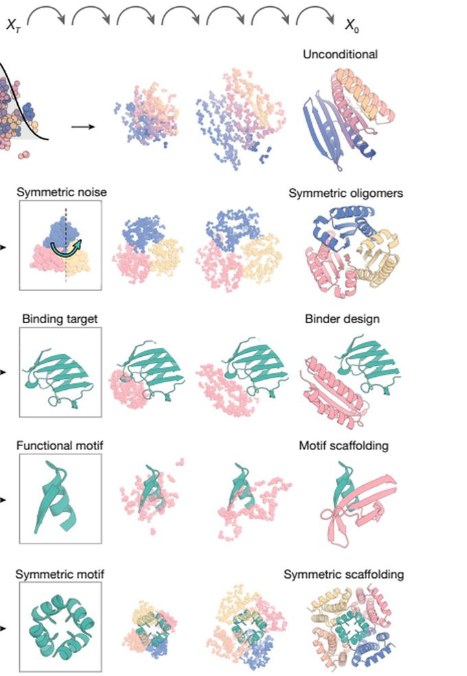
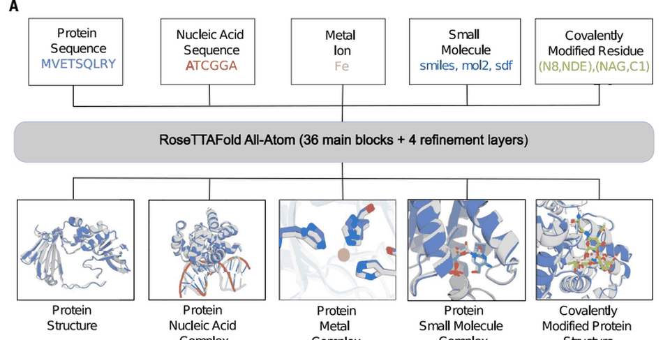

3.1原理

训练与成本：260 残基截断片段、单卡 RTX2080 约 10 分钟完成 400 残基预测，全原子精细化交给 pyRosetta；显存约 8 GB（AlphaFold2 约 24 GB）[9]。
性能：CASP14 平均 TM-score 约 0.75，与 AlphaFold2 仍有差距，但在缺乏模板或中等难度任务中稳定[9]。
差别不在“多加了一条轨道”，而在信息流方向：双轨模型要等 1D 与 2D 处理完毕才推理坐标，三轨模型让坐标在中间层持续参与更新。
3.2发展
3.2.1 性能评估：CASP14 与 CAMEO

在同一届盲测中接近最好方法，并在连续盲测中稳定领先多数服务器：作者对差距的解释是“预测能力 + 可搜索的模型规模”，而非单纯的网络深度[9]。
3.2.2 RFdiffusion：从预测到设计（互动）
基本思路：把蛋白骨架看作可加噪的三维坐标，用 RoseTTAFold 作去噪器（RFdiffusion 代码），从随机噪声反演回可设计骨架；序列交由 ProteinMPNN 设计[12]。
条件设计：对称性、结合靶标、功能基序以坐标或掩码注入，同一模型可产出单体、对称寡聚体、结合蛋白与基序支架[12]。
拖动滑块控制“去噪步数”，观察随机点如何收敛为一条可折叠的骨架。

— — —
3.2.3 RoseTTAFold All-Atom

全原子表示：蛋白与核酸按残基/碱基表示，其余组分按原子图表示——1D 编码元素类型，2D 编码化学键，3D 编码手性[11]。
架构与训练：All-Atom：36 个主区块 + 4 个精修层，全原子 FAPE 损失；训练集约 12 万条蛋白—小分子结构、11 万条蛋白—金属结构[11]。
3.3应用
结构解析与复合物预测
- 四个此前未解析的晶体结构——GLYAT、细菌氧化还原酶、细菌表层蛋白 SLP、真菌蛋白 Lrbp——用 RoseTTAFold 作模板成功完成分子置换[9]。
- PI3Kγ 复合物：帮助完成异源二聚体的结构解析，体现“预测—密度图拟合—模型修正”的协同[9]。
- 仅由序列生成复合物模型，跳过“分别建模—对接”流程。
功能注释与疾病突变
- TANGO2：Ntn 水解酶折叠，突变 R26K、R32Q、G154R、L50P 位于活性口袋或疏水核心[9]。
- ADAM33：前导结构域被预测为糖蛋白 β-折叠，H318Q 位于该折叠核心[9]。
- CERS1：跨膜神经酰胺合成酶，E185Q、H183Q 等突变靠近催化残基[9]。
这些结果的价值不在“给出结论”，而在把零散的突变信息组织成可验证的机制假说。
3.4与 AlphaFold 的技术对照
| 比较维度 | AlphaFold2 / AF3 | RoseTTAFold 系列 |
|---|---|---|
| 信息流 | 双轨（MSA + 残基对）+ 结构模块 | 三轨（1D/2D/3D）并行交互 |
| 推理成本 | 较高显存与算力需求 | 单卡可跑，400 残基以内约 10 分钟 |
| CASP14 表现 | 中位 GDT 92.4，居首 | 平均 TM-score 约 0.75，次之 |
| 能力扩展 | AF3：核酸、配体、共价修饰 | All-Atom：全原子体系；RFdiffusion：设计 |
| 开放程度 | AF2 开源；AF3 未开放代码 | 代码与服务器开放，便于二次开发 |
二者并非替代关系：AlphaFold 系列以精度与覆盖面取胜，RoseTTAFold 系列以低门槛与可改造性见长；在方法学上，二者共享 MSA、注意力与端到端训练三项基础[7,8,9]。